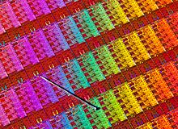

Haswell (microarchitecture)
|  A Haswell wafer with a pin for scale | |
| CPUID code | 0306C3h |
|---|---|
| Product code |
|
| Cores |
|
| L1 cache | 64 KB per core |
| L2 cache | 256 KB per core |
| L3 cache | 2–45 MB (shared) |
| Model |
|
| Created | June 4, 2013 |
| Transistors | 22 nm (Tri-Gate) |
| Architecture | Haswell x86 |
| Instructions | MMX, AES-NI, CLMUL, FMA3 |
| Extensions | |
| Socket(s) |
|
| Predecessor | Sandy Bridge (Tock) Ivy Bridge (Tick) |
| Successor | Broadwell (Tick/Process) |
| GPU |
|
| Brand name(s) |
|
{kind=link}
Haswell is the codename for a processor microarchitecture developed by Intel as the "fourth-generation core" successor to the Ivy Bridge microarchitecture.[1] Intel officially announced CPUs based on this microarchitecture on June 4, 2013, at Computex Taipei 2013,[2] while a working Haswell chip was demonstrated at the 2011 Intel Developer Forum.[3] With Haswell, which uses a 22 nm process,[4] Intel also introduced low-power processors designed for convertible or "hybrid" ultrabooks, designated by the "Y" suffix.
Haswell CPUs are used in conjunction with the Intel 8 Series chipsets, Intel 9 Series chipsets, and Intel C220 series chipsets.
Contents
Design[edit]
The Haswell architecture is specifically designed[5] to optimize the power savings and performance benefits from the move to FinFET (non-planar, "3D") transistors on the improved 22 nm process node.[6]
Haswell has been launched in three major forms:[7]
- Desktop version (LGA 1150 socket and the new LGA 2011-v3 socket): Haswell-DT
- Mobile/Laptop version (PGA socket): Haswell-MB
- BGA version:
- 47 W and 57 W TDP classes: Haswell-H (for "All-in-one" systems, Mini-ITX form factor motherboards, and other small footprint formats)
- 13.5 W and 15 W TDP classes (MCP): Haswell-ULT (for Intel's UltraBook platform)
- 10 W TDP class (SoC): Haswell-ULX (for tablets and certain UltraBook-class implementations)
Notes[edit]
- ULT = Ultra Low TDP; ULX = Ultra Low eXtreme TDP
- Only certain quad-core variants and BGA R-series stock keeping units (SKUs) receive GT3e (Intel Iris Pro 5200) integrated graphics. All other models have GT3 (Intel HD 5000 or Intel Iris 5100), GT2 (Intel HD 4200, 4400, 4600, P4600 or P4700) or GT1 (Intel HD Graphics) integrated graphics.[8] See also Intel HD and Iris Graphics for more details.
- Due to the low power requirements of tablet and UltraBook platforms, Haswell-ULT and Haswell-ULX are only available in dual-core configurations. All other versions come as dual- or quad-core variants.
Performance[edit]
Compared to Ivy Bridge:
- Approximately 8% faster vector processing[9]
- Up to 5% faster single-threaded performance
- 6% faster multi-threaded performance
- Desktop variants of Haswell draw between 8% and 23% more power under load than Ivy Bridge.[9][10][11]
- A 6% increase in sequential CPU performance (eight execution ports per core versus six)[9]
- Up to 20% performance increase over the integrated HD4000 GPU (Haswell HD4600 vs Ivy Bridge's built-in Intel HD4000)[9]
- Total performance improvement on average is about 3%[9]
- Around 15 °C hotter than Ivy Bridge, while clock frequencies of over 4.6 GHz are achievable[12][13][14][15][16][17]
Technology[edit]
Features carried over from Ivy Bridge[edit]
- 22 nm manufacturing process[4]
- 3D Tri-Gate FinFET transistors[18]
- Micro-operation cache(Uop Cache) capable of storing 1.5 K micro-operations (approximately 6 KB in size)[19]
- 14- to 19-stage instruction pipeline, depending on the micro-operation cache hit or miss (an approach used in the even earlier Sandy Bridge microarchitecture)[19]
- Mainstream variants are up to quad-core.[20]
- Native support for dual-channel DDR3/DDR3L memory,[21] with up to 32 GB of RAM on LGA 1150 variants
- 64 KB (32 KB Instruction + 32 KB Data) L1 cache and 256 KB L2 cache per core[22]
- A total of 16 PCI Express 3.0 lanes on LGA 1150 variants[23]
New features[edit]
{kind=link}
- Wider core:[24] fourth arithmetic logic unit (ALU), third address generation unit (AGU),[25][26][27] second branch execution unit (BEU), deeper buffers, higher cache bandwidth, improved front-end and memory controller, higher load/store bandwidth.
- New instructions[28] (HNI, includes Advanced Vector Extensions 2 (AVX2), gather, BMI1, BMI2, ABM and FMA3 support).[29]
- The instruction decode queue, which holds instructions after they have been decoded, is no longer statically partitioned between the two threads that each core can service.[19]
- New sockets and chipsets:
- Intel Transactional Synchronization Extensions (TSX) for the Haswell-EX variant. In August 2014 Intel announced that a bug exists in the TSX implementation on the current steppings of Haswell, Haswell-E, Haswell-EP and early Broadwell CPUs, which resulted in disabling the TSX feature on affected CPUs via a microcode update.[33][34][35][36]
- Hardware graphics support for Direct3D 11.1 and OpenGL 4.3.[37][38][39] Intel 10.18.14.5057 driver is the last planned driver release on Windows 7/8.1.[40]
- DDR4 for the enthusiast and enterprise/server segments[41] and for the Enthusiast-Class Desktop Platform Haswell-E[42]
- Variable Base clock (BClk)[43] like LGA 2011.[44]
- Four versions of the integrated GPU: GT1, GT2, GT3 and GT3e, where GT3 version has 40 execution units (EUs). Haswell's predecessor, Ivy Bridge, has a maximum of 16 EUs. GT3e version with 40 EUs and on-package 128 MB of embedded DRAM (eDRAM), called Crystalwell, is available only in mobile H-SKUs and desktop (BGA-only) R-SKUs. Effectively, this eDRAM is a Level 4 cache; it is shared dynamically between the on-die GPU and CPU, and serving as a victim cache to the CPU's Level 3 cache.[45][46][47][48][49]
- Optional support for Thunderbolt technology and Thunderbolt 2.0[50][51]
- Fully integrated voltage regulator (FIVR), thereby moving some of the components from motherboard onto the CPU.[52][53][54]
- New advanced power-saving system; due to Haswell's new low-power C6 and C7 sleep states, not all power supply units (PSUs) are suitable for computers with Haswell CPUs.[55][56]
- 37, 47, 57 W thermal design power (TDP) mobile processors.[20]
- 35, 45, 65, 84, 88, 95 and 130–140 W (high-end, Haswell-E) TDP desktop processors.[20]
- 15 W or 11.5W TDP processors for the Ultrabook platform (multi-chip package like Westmere)[57] leading to reduced heat, which results in thinner as well as lighter Ultrabooks, but the performance level is slightly lower than the 17 W version.[58]
- Shrink of the Platform Controller Hub (PCH), from 65 nm to 32 nm.[59]
Translation lookaside buffer sizes[60][61] Cache Page size Name Level 4 KB 2 MB 1 GB DTLB 1st 64 32 4 ITLB 1st 128 8 / logical core none STLB 2nd 1024 none
Server processors features[edit]
- Haswell-EP variant, released in September 2014, with up to 18 cores and marketed as the Xeon E5-1600 v3 and Xeon E5-2600 v3 series.[62]
- Haswell-EX variant, released in May 2015, with 18 cores and functioning TSX.[35][63][64]
- A new cache design.
- Up to 35 MB total unified cache (last level cache, LLC) for Haswell-EP[65] and up to 40 MB for Haswell-EX.
- LGA 2011-v3 socket replaces LGA 2011 for the Haswell EP; the new socket has the same number of pins, but it is keyed differently due to electrical incompatibility.[66][67][68]
- The already launched Xeon E3 v3 Haswells will get a refresh in spring 2014,[69] together with a refreshed Intel C220 series PCH chipset.[70]
- TDP up to 160 W for Haswell-EP.[71]
- Haswell-EP models with ten and more cores support cluster on die (COD) operation mode,[72] allowing CPU's multiple columns of cores and last level cache (LLC) slices to be logically divided into what is presented as two non-uniform memory access (NUMA) CPUs to the operating system. By keeping data and instructions local to the "partition" of CPU which is processing them, therefore decreasing the LLC access latency, COD brings performance improvements to NUMA-aware operating systems and applications.[73]
Haswell Refresh[edit]
Around the middle of 2014, Intel released a refresh of Haswell, simply titled Haswell Refresh. When compared to the original Haswell CPUs lineup, Haswell Refresh CPUs offer a modest increase in clock frequencies, usually of 100 MHz.[74] Haswell Refresh CPUs are supported by Intel's 9 Series chipsets (Z97 and H97, codenamed Wildcat Point), while motherboards with 8 Series chipsets (codenamed Lynx Point) usually require a BIOS update to support Haswell Refresh CPUs.[75]
The CPUs codenamed Devil's Canyon, covering the i5 and i7 K-series SKUs, employ a new and improved thermal interface material (TIM) called next-generation polymer thermal interface material (NGPTIM). This improved TIM reduces the CPU's operating temperatures and improves the overclocking potential, as something that had been problematic since the introduction of Ivy Bridge.[76] Other changes for the Devil's Canyon CPUs include a TDP increase to 88 W, additional decoupling capacitors to help smooth out the outputs from the fully integrated voltage regulator (FIVR), and support for the VT-d that was previously limited to non-K-series SKUs.[77] TSX was another feature brought over from the non-K-series SKUs, until August 2014 when a microcode update disabled TSX due to a bug that was discovered in its implementation.[35][36]
List of Haswell processors[edit]
Desktop processors[edit]
{kind=link}
- All models support: MMX, SSE, SSE2, SSE3, SSSE3, SSE4.1, SSE4.2, F16C, Enhanced Intel SpeedStep Technology (EIST), Intel 64, XD bit (an NX bit implementation), Intel VT-x, and Smart Cache.
- Core i3, i5 and i7 support AVX, AVX2, BMI1, BMI2, FMA3, and AES-NI.[78]
- Core i3 and i7, as well as the Core i5-4570T and i5-4570TE, support Hyper-Threading (HT).[78]
- Core i5 and i7 support Turbo Boost 2.0.[78]
- Although it was initially supported on selected models, since August 2014 desktop variants no longer support TSX due to a bug that was discovered in its implementation; as a workaround, a microcode update disabled the TSX feature.[33][35][36][78]
- SKUs below 45xx as well as R-series and K-series SKUs do not support Trusted Execution Technology or vPro.[78]
- Intel VT-d, which is Intel's IOMMU, is supported on all i5 and i7 SKUs except the i5-4670K and i7-4770K.[78][79][80] Support for VT-d requires the chipset and motherboard to also support VT-d.
- Models i5-4690K and i7-4790K, codenamed Devil's Canyon, have a better internal thermal grease to help heat escape and an improved internal voltage regulator ("FIVR"), to help deliver cleaner power in situations like overclocking.
- Transistors: 1.4 billion[81][82]
- Die size: 177 mm2[81]
- Intel HD and Iris Graphics in following variants:
- R-series desktop processors feature Intel Iris Pro 5200 graphics (GT3e).[83]
- All other currently known i3, i5 and i7 desktop processors include Intel HD 4600 graphics (GT2).[84]
- The exceptions are processors 41xxx, which include HD 4400 graphics (GT2).
- Celeron and Pentium processors contain Intel HD Graphics (GT1).
- Pentium G3258, also known as the Pentium Anniversary Edition, has an unlocked multiplier. Its release marks 20 years of "Pentium" as a brand.[85]
The following table lists available desktop processors.
| Target segment |
Cores (threads) |
Processor branding and model |
GPU model | CPU clock rate | Graphics clock rate | Cache | TDP | PCIe 3.0 lane configurations[a] |
VT-d[b] | Release date |
Release price (USD) |
Motherboard | ||||||
|---|---|---|---|---|---|---|---|---|---|---|---|---|---|---|---|---|---|---|
| Normal | Turbo | Normal | Turbo | L3 | L4[a] | Socket | Interface | Memory | ||||||||||
| Enthusiast / High-End | 8 (16) | Core i7 Extreme |
5960X | N/A | 3.0 GHz | 3.5 GHz | N/A | N/A | 20 MB | N/A | 140 W | 2×16 + 1×8 | Yes | August 29, 2014[86] | $999 | LGA 2011-v3 | DMI 2.0 PCIe 3.0 |
Up to quad channel DDR4-2133 |
| 6 (12) | 5930K | 3.5 GHz | 3.7 GHz | 15 MB | $583 | |||||||||||||
| 5820K | 3.3 GHz | 3.6 GHz | 1×16 + 1×8 + 1×4 | $389 | ||||||||||||||
| Performance | 4 (8) | Core i7 | 4790K | HD 4600 (GT2) |
4.0 GHz | 4.4 GHz | 350 MHz[87] | 1.25 GHz | 8 MB | 88 W | 1×16 2×8 1×8 + 2×4 |
June 2, 2014 | $339 | LGA 1150 |
Up to dual channel DDR3-1600[88] | |||
| 4790 | 3.6 GHz | 4.0 GHz | 1.2 GHz | 84 W | May 11, 2014 | $303 | ||||||||||||
| 4790S | 3.2 GHz | 65 W | ||||||||||||||||
| 4790T | 2.7 GHz | 3.9 GHz | 45 W | |||||||||||||||
| 4785T | 2.2 GHz | 3.2 GHz | 35 W | |||||||||||||||
| 4771 | 3.5 GHz | 3.9 GHz | 84 W | September 1, 2013 | $320 | |||||||||||||
| 4770K | 1.25 GHz | No | June 2, 2013[89] | $339 | ||||||||||||||
| 4770 | 3.4 GHz | 1.2 GHz | Yes | $303 | ||||||||||||||
| 4770S | 3.1 GHz | 65 W | ||||||||||||||||
| 4770R | Iris Pro 5200 (GT3e) |
3.2 GHz | 200 MHz | 1.3 GHz | 6 MB | 128 MB | $392 | BGA 1364 | ||||||||||
| 4770T | HD 4600 (GT2) |
2.5 GHz | 3.7 GHz | 350 MHz[87] | 1.2 GHz | 8 MB | N/A | 45 W | $303 | LGA 1150 | ||||||||
| 4770TE | 2.3 GHz | 3.3 GHz | 1 GHz | |||||||||||||||
| 4765T | 2.0 GHz | 3.0 GHz | 1.2 GHz | 35 W | ||||||||||||||
| Mainstream | 4 (4) | Core i5 | 4690K | 3.5 GHz | 3.9 GHz | 6 MB | 88 W | June 2, 2014 | $242 | |||||||||
| 4690 | 84 W | May 11, 2014 | $213 | |||||||||||||||
| 4690S | 3.2 GHz | 65 W | ||||||||||||||||
| 4690T | 2.5 GHz | 3.5 GHz | 45 W | |||||||||||||||
| 4670K | 3.4 GHz | 3.8 GHz | 84 W | No | June 2, 2013 | $242 | ||||||||||||
| 4670 | Yes | $213 | ||||||||||||||||
| 4670S | 3.1 GHz | 65 W | ||||||||||||||||
| 4670R | Iris Pro 5200 (GT3e) |
3.0 GHz | 3.7 GHz | 200 MHz | 1.3 GHz | 4 MB | 128 MB | $310 | BGA 1364 | |||||||||
| 4670T | HD 4600 (GT2) |
2.3 GHz | 3.3 GHz | 350 MHz[87] | 1.2 GHz | 6 MB | N/A | 45 W | $213 | LGA 1150 | ||||||||
| 4590 | 3.3 GHz | 3.7 GHz | 1.15 GHz | 84 W | May 11, 2014 | $192 | ||||||||||||
| 4590S | 3.0 GHz | 65 W | ||||||||||||||||
| 4590T | 2.0 GHz | 3.0 GHz | 35 W | |||||||||||||||
| 4570 | 3.2 GHz | 3.6 GHz | 84 W | June 2, 2013 | ||||||||||||||
| 4570S | 2.9 GHz | 65 W | ||||||||||||||||
| 4570R | Iris Pro 5200 (GT3e) |
2.7 GHz | 3.2 GHz | 200 MHz | 4 MB | 128 MB | $288 | BGA 1364 | ||||||||||
| 2 (4) | 4570T | HD 4600 (GT2) |
2.9 GHz | 3.6 GHz | N/A | 35 W | $192 | LGA 1150 | ||||||||||
| 4570TE | 2.7 GHz | 3.3 GHz | 350 MHz[87] | 1 GHz | ||||||||||||||
| 4 (4) | 4460 | 3.2 GHz | 3.4 GHz | 1.1 GHz | 6 MB | 84 W | May 11, 2014 | $182 | ||||||||||
| 4460S | 2.9 GHz | 65 W | ||||||||||||||||
| 4460T | 1.9 GHz | 2.7 GHz | 35 W | |||||||||||||||
| 4440 | 3.1 GHz | 3.3 GHz | 84 W | September 1, 2013 | ||||||||||||||
| 4440S | 2.8 GHz | 65 W | ||||||||||||||||
| 4430 | 3.0 GHz | 3.2 GHz | 84 W | June 2, 2013[89] | ||||||||||||||
| 4430S | 2.7 GHz | 65 W | ||||||||||||||||
| 2 (4) | Core i3 | 4370 | 3.8 GHz | N/A | 1.15 GHz | 4 MB | 54 W | No | July 20, 2014 | $149 | ||||||||
| 4360 | 3.7 GHz | May 11, 2014 | ||||||||||||||||
| 4350 | 3.6 GHz | $138 | ||||||||||||||||
| 4340 | September 1, 2013 | $149 | ||||||||||||||||
| 4330 | 3.5 GHz | $138 | ||||||||||||||||
| 4370T | 3.3 GHz | 200 MHz | 35 W | March 30, 2015 | ||||||||||||||
| 4360T | 3.2 GHz | July 20, 2014 | ||||||||||||||||
| 4350T | 3.1 GHz | May 11, 2014 | ||||||||||||||||
| 4330T | 3.0 GHz | September 1, 2013 | ||||||||||||||||
| 4340TE | 2.6 GHz | 350 MHz | 1 GHz | May 11, 2014 | $138 | |||||||||||||
| 4330TE | 2.4 GHz | September 1, 2013 | $122 | |||||||||||||||
| 4170 | HD 4400 (GT2) |
3.7 GHz | 1.15 GHz | 3 MB | 54 W | March 30, 2015 | $117 | |||||||||||
| 4160 | 3.6 GHz | July 20, 2014 | ||||||||||||||||
| 4150 | 3.5 GHz | May 11, 2014 | ||||||||||||||||
| 4130 | 3.4 GHz | September 1, 2013 | $122 | |||||||||||||||
| 4170T | 3.2 GHz | 200 MHz | 35 W | March 30, 2015 | $117 | |||||||||||||
| 4160T | 3.1 GHz | July 20, 2014 | ||||||||||||||||
| 4150T | 3.0 GHz | May 11, 2014 | ||||||||||||||||
| 4130T | 2.9 GHz | September 1, 2013 | $122 | |||||||||||||||
| 2 (2) | Pentium | G3470 | HD Graphics | 3.6 GHz | 350 MHz | 1.1 GHz | 53 W | March 30, 2015 | $86 | |||||||||
| G3460 | 3.5 GHz | July 20, 2014 | ||||||||||||||||
| G3450 | 3.4 GHz | May 11, 2014 | ||||||||||||||||
| G3440 | 3.3 GHz | $75 | ||||||||||||||||
| G3430 | December 1, 2013 | $86 | ||||||||||||||||
| G3420 | 3.2 GHz | $75 | ||||||||||||||||
| G3460T | 3.0 GHz | 200 MHz | 1.1 GHz | 35 W | March 30, 2015 | |||||||||||||
| G3450T | 2.9 GHz | July 20, 2014 | ||||||||||||||||
| G3440T | 2.8 GHz | May 11, 2014 | ||||||||||||||||
| G3420T | 2.7 GHz | December 1, 2013 | ||||||||||||||||
| G3320TE | 2.3 GHz | 350 MHz | 1 GHz | Up to dual channel DDR3-1333 | ||||||||||||||
| G3260 | 3.3 GHz | 1.1 GHz | 53 W | March 30, 2015 | $64 | |||||||||||||
| G3258[c] | 3.2 GHz | June 2, 2014 | $72 | |||||||||||||||
| G3250 | July 20, 2014 | $64 | ||||||||||||||||
| G3240 | 3.1 GHz | May 11, 2014 | ||||||||||||||||
| G3220 | 3.0 GHz | December 1, 2013 | ||||||||||||||||
| G3260T | 2.9 GHz | 200 MHz | 35 W | March 30, 2015 | ||||||||||||||
| G3250T | 2.8 GHz | July 20, 2014 | ||||||||||||||||
| G3240T | 2.7 GHz | May 11, 2014 | ||||||||||||||||
| G3220T | 2.6 GHz | December 1, 2013 | ||||||||||||||||
| Celeron | G1850 | 2.9 GHz | 350 MHz | 1.05 GHz | 2 MB | 53 W | May 11, 2014 | $52 | ||||||||||
| G1840 | 2.8 GHz | $42 | ||||||||||||||||
| G1830 | December 1, 2013 | $52 | ||||||||||||||||
| G1820 | 2.7 GHz | $42 | ||||||||||||||||
| G1840T | 2.5 GHz | 200 MHz | 35 W | May 11, 2014 | ||||||||||||||
| G1820T | 2.4 GHz | December 1, 2013 | ||||||||||||||||
| G1820TE | 2.2 GHz | 1 GHz | ||||||||||||||||
- a Some of these configurations could be disabled by the chipset. For example, H-series chipsets disable all PCIe 3.0 lane configurations except 1×16.
- b This feature also requires a chipset that supports VT-d like the Q87 chipset or the X99 chipset.
- c This is called 20th Anniversary Edition and has an unlocked multiplier.
SKU suffixes to denote:
- K – unlocked (adjustable CPU multiplier up to 63x)
- The Pentium G3258 CPU is unlocked despite not having the K-suffix.
- S – performance-optimized lifestyle (low power with 65 W TDP)
- T – power-optimized lifestyle (ultra low power with 35–45 W TDP)
- R – BGA packaging / High-performance GPU (currently Iris Pro 5200 (GT3e))
- X – extreme edition (adjustable CPU ratio with no ratio limit)
Server processors[edit]
{kind=link}
{kind=link}
- All models support: MMX, SSE, SSE2, SSE3, SSSE3, SSE4.1, SSE4.2, AVX (Advanced Vector Extensions), AVX2, FMA3, F16C, BMI (Bit Manipulation Instructions 1)+BMI2, Enhanced Intel SpeedStep Technology (EIST), Intel 64, XD bit (an NX bit implementation), TXT, Intel vPro, Intel VT-x, Intel VT-d, hyper-threading (except E3-1220 v3 and E3-1225 v3), Turbo Boost 2.0, AES-NI, and Smart Cache.
- Haswell-EX models (E7-48xx/88xx v3) support TSX, while for Haswell-E, Haswell-WS (E3-12xx v3) and Haswell-EP (E5-16xx/26xx v3) models it was disabled via a microcode update in August 2014, due to a bug that was discovered in the TSX implementation.[35][36]
- Transistors: 5.56 billion[90]
- Die size: 661 mm2[90]
The first digit of the model number designates the largest supported multi-socket configuration; thus, E5-26xx v3 models support up to dual-socket configurations, while the E7-48xx v3 and E7-88xx v3 models support up to quad- and eight-socket configurations, respectively. Also, E5-16xx/26xx v3 and E7-48xx/88xx v3 models have no integrated GPU.
Lists of launched server processors are below, split between Haswell E3-12xx v3, E5-16xx/26xx v3 and E7-48xx/88xx v3 models.
| Target segment |
Cores (threads) |
Processor branding and model |
CPU clock rate | L3 cache |
TDP | Release date |
Release price (USD) |
Motherboard | ||||
|---|---|---|---|---|---|---|---|---|---|---|---|---|
| Normal | Turbo | Socket | Interface | Memory | ||||||||
| Server | 4 (8) | Xeon E7 v3 | E7-8893v3 | 3.2 GHz | 3.5 GHz | 45 MB | 140 W | May 2015 | $6,841 | LGA 2011-1 |
QPI (up to 9.6 GT/s[b]) DMI 2.0 PCIe 3.0 |
Up to DDR4-1866 or DDR3-1600 |
| 10 (20) | E7-8891v3 | 2.8 GHz | 165 W | |||||||||
| 18 (36) | E7-8890v3 | 2.5 GHz | 3.3 GHz | $7,174 | ||||||||
| E7-8880v3 | 2.3 GHz | 3.1 GHz | 150 W | $5,895 | ||||||||
| E7-8880Lv3 | 2.0 GHz | 2.8 GHz | 115 W | $6,063 | ||||||||
| E7-8870v3 | 2.1 GHz | 2.9 GHz | 140 W | $4,672 | ||||||||
| 16 (32) | E7-8867v3 | 2.5 GHz | 3.3 GHz | 165 W | ||||||||
| E7-8860v3 | 2.2 GHz | 3.2 GHz | 40 MB | $4,061 | ||||||||
| 14 (28) | E7-4850v3 | 2.8 GHz | 35 MB | 115 W | $3,003 | |||||||
| 12 (24) | E7-4830v3 | 2.1 GHz | 2.7 GHz | 30 MB | $2,170 | |||||||
| 10 (20) | E7-4820v3 | 1.9 GHz | N/A | 25 MB | $1,502 | |||||||
| 8 (16) | E7-4809v3 | 2.0 GHz | ||||||||||
| Target segment |
Cores (threads) |
Processor branding and model |
CPU clock rate | CPU AVX clock rate[93] |
L3 cache |
TDP | Release date |
Release price (USD) tray / box |
Motherboard | |||||
|---|---|---|---|---|---|---|---|---|---|---|---|---|---|---|
| Normal | Turbo | Normal | Turbo | Socket | Interface | Memory | ||||||||
| Server | 18 (36) | Xeon E5 v3 | 2699v3 | 2.3 GHz | 3.6 GHz | 1.9 GHz | 3.3 GHz | 45 MB | 145 W | September 9, 2014 | N/A | LGA 2011-3 |
QPI (up to 9.6 GT/s[b]) DMI 2.0 PCIe 3.0 |
up to DDR4-2133 |
| 16 (32) | 2698v3 | 40 MB | 135 W | |||||||||||
| 2698Av3[94] | 2.8 GHz | 3.2 GHz | 2.3 GHz | 2.9 GHz | 165 W | November 2014 | OEM | |||||||
| 14 (28) | 2697v3 | 2.6 GHz | 3.6 GHz | 2.2 GHz | 3.3 GHz | 35 MB | 145 W | September 9, 2014 | $2,702 / $2,706 | |||||
| 2695v3 | 2.3 GHz | 3.3 GHz | 1.9 GHz | 3.0 GHz | 120 W | $2,424 / $2,428 | ||||||||
| 12 (24) | 2690v3 | 2.6 GHz | 3.5 GHz | 2.3 GHz | 3.2 GHz | 30 MB | 135 W | $2,090 / $2,094 | ||||||
| 14 (28) | 2683v3 | 2.0 GHz | 3.0 GHz | 1.7 GHz | 2.7 GHz | 35 MB | 120 W | $1,846 / — | ||||||
| 12 (24) | 2680v3 | 2.5 GHz | 3.3 GHz | 2.1 GHz | 3.1 GHz | 30 MB | $1,745 / $1,749 | |||||||
| 2673v3[c] | 2.4 GHz | 3.1 GHz | ||||||||||||
| 2670v3 | 2.3 GHz | 3.1 GHz | 2.0 GHz | 2.9 GHz | 120 W | $1,589 / $1,593 | ||||||||
| 8 (16) | 2667v3 | 3.2 GHz | 3.6 GHz | 2.7 GHz | 3.5 GHz | 20 MB | 135 W | $2,057 / — | ||||||
| 10 (20) | 2660v3 | 2.6 GHz | 3.3 GHz | 2.2 GHz | 3.1 GHz | 25 MB | 105 W | $1,445 / $1,449 | ||||||
| 12 (24) | 2650Lv3 | 1.8 GHz | 2.5 GHz | 1.5 GHz | 2.3 GHz | 30 MB | 65 W | $1,329 / — | ||||||
| 2658v3 | 2.2 GHz | 2.9 GHz | 1.9 GHz | 3.0 GHz | 105 W | $1,832 / — | ||||||||
| 10 (20) | 2650v3 | 2.3 GHz | 3.0 GHz | 2.0 GHz | 2.8 GHz | 25 MB | $1,166 / $1,171 | |||||||
| 12 (24) | 2648Lv3 | 1.8 GHz | 2.5 GHz | 1.5 GHz | 2.2 GHz | 30 MB | 75 W | $1,544 / — | ||||||
| 6 (12) | 2643v3 | 3.4 GHz | 3.7 GHz | 2.8 GHz | 3.6 GHz | 20 MB | 135 W | $1,552 / — | ||||||
| 8 (16) | 2640v3 | 2.6 GHz | 3.4 GHz | 2.2 GHz | 3.4 GHz | 20 MB | 90 W | $939 / $944 | up to DDR4-1866 | |||||
| 4 (8) | 2637v3 | 3.5 GHz | 3.7 GHz | 3.2 GHz | 3.6 GHz | 15 MB | 135 W | $996 / — | up to DDR4-2133 | |||||
| 8 (16) | 2630v3 | 2.4 GHz | 3.2 GHz | 2.1 GHz | 3.2 GHz | 20 MB | 85 W | $667 / $671 | up to DDR4-1866 | |||||
| 2630Lv3 | 1.8 GHz | 2.9 GHz | 1.5 GHz | 2.9 GHz | 55 W | $612 / — | ||||||||
| 10 (20) | 2628Lv3 | 2.0 GHz | 2.5 GHz | 1.7 GHz | 2.4 GHz | 25 MB | 75 W | $1,364 / — | ||||||
| 4 (8) | 2623v3 | 3.0 GHz | 3.5 GHz | 2.7 GHz | 3.5 GHz | 10 MB | 105 W | $444 / — | ||||||
| 6 (12) | 2620v3 | 2.4 GHz | 3.2 GHz | 2.1 GHz | 3.2 GHz | 15 MB | 85 W | $417 / $422 | ||||||
| 8 (16) | 2618Lv3 | 2.3 GHz | 3.4 GHz | 1.9 GHz | 3.4 GHz | 20 MB | 75 W | $779 / — | ||||||
| 6 (6) | 2609v3 | 1.9 GHz | N/A | 1.9 GHz | N/A | 15 MB | 85 W | $306 / $306 | up to DDR4-1600 | |||||
| 6 (12) | 2608Lv3 | 2.0 GHz | 1.7 GHz | 52 W | $441 / — | up to DDR4-1866 | ||||||||
| 6 (6) | 2603v3 | 1.6 GHz | 1.3 GHz | 85 W | $213 / $217 | up to DDR4-1600 | ||||||||
| Workstation | 10 (20) | 2687Wv3 | 3.1 GHz | 3.5 GHz | 2.7 GHz | 3.5 GHz | 25 MB | 160 W | $2,141 / $2,145 | up to DDR4-2133 | ||||
| 8 (16) | 1680v3 | 3.2 GHz | 3.8 GHz | 2.9 GHz | 3.4 GHz | 20 MB | 140 W | $1,723 / — | DMI 2.0 PCIe 3.0 | |||||
| 1660v3 | 3.0 GHz | 3.5 GHz | 2.7 GHz | 3.5 GHz | $1,080 / — | |||||||||
| 6 (12) | 1650v3 | 3.5 GHz | 3.8 GHz | 3.2 GHz | 3.7 GHz | 15 MB | $583 / $586 | |||||||
| 4 (8) | 1630v3 | 3.7 GHz | 3.8 GHz | 3.4 GHz | 3.7 GHz | 10 MB | $372 / — | |||||||
| 1620v3 | 3.5 GHz | 3.6 GHz | 3.2 GHz | 3.5 GHz | $294 / $297 | |||||||||
| 4 (4) | 1607v3 | 3.1 GHz | N/A | 2.8 GHz | N/A | $255 / — | up to DDR4-1866 | |||||||
| 4 (4) | 1603v3 | 2.8 GHz | 2.5 GHz | $202 / — | ||||||||||
| Target segment |
Cores (threads) |
Processor branding and model |
GPU model | CPU clock rate | Graphics clock rate | L3 cache |
GPU eDRAM |
TDP | Release date |
Release price (USD) tray / box |
Motherboard | |||||
|---|---|---|---|---|---|---|---|---|---|---|---|---|---|---|---|---|
| Normal | Turbo | Normal | Turbo | Socket | Interface | Memory | ||||||||||
| Server | 4 (8) | Xeon E3 v3 | 1286v3 | HD P4700 (GT2) | 3.7 GHz | 4.1 GHz | 350 MHz | 1.3 GHz | 8 MB | N/A | 84 W | May 11, 2014 | $662 / — | LGA 1150 |
DMI 2.0 PCIe 3.0 |
up to dual channel DDR3-1600 with ECC |
| 1286Lv3 | 3.2 GHz | 4.0 GHz | 1.25 GHz | 65 W | $774 / — | |||||||||||
| 1285v3 | 3.6 GHz | 1.3 GHz | 84 W | June 2, 2013 | $662 / — | |||||||||||
| 1285Lv3 | 3.1 GHz | 3.9 GHz | 1.25 GHz | 65 W | $774 / — | |||||||||||
| 1284Lv3 | Iris Pro 5200 (GT3e) | 1.8 GHz | 3.2 GHz | 750 MHz | 1 GHz | 6 MB | 128 MB | 47 W | February 18, 2014 | OEM | BGA 1364 | |||||
| 1281v3 | N/A | 3.7 GHz | 4.1 GHz | N/A | 8 MB | N/A | 82 W | May 11, 2014 | $612 / — | LGA 1150 | ||||||
| 1280v3 | 3.6 GHz | 4.0 GHz | June 2, 2013 | |||||||||||||
| 1276v3 | HD P4600 (GT2) | 350 MHz | 1.25 GHz | 84 W | May 11, 2014 | $339 / $350 | ||||||||||
| 1275v3 | 3.5 GHz | 3.9 GHz | June 2, 2013 | $339 / $350 | ||||||||||||
| 1275Lv3 | HD (GT1) | 2.7 GHz | 1.2 GHz | 45 W | May 11, 2014 | $328 / — | ||||||||||
| 1271v3 | N/A | 3.6 GHz | 4.0 GHz | N/A | 80 W | $328 / $339 | ||||||||||
| 1270v3 | 3.5 GHz | 3.9 GHz | June 2, 2013 | |||||||||||||
| 1268Lv3 | HD P4600 (GT2) | 2.3 GHz | 3.3 GHz | 350 MHz | 1 GHz | 45 W | $310 / — | |||||||||
| 1265Lv3 | HD (GT1) | 2.5 GHz | 3.7 GHz | 1.2 GHz | $294 / — | |||||||||||
| 1246v3 | HD P4600 (GT2) | 3.5 GHz | 3.9 GHz | 84 W | May 11, 2014 | $276 / $287 | ||||||||||
| 1245v3 | 3.4 GHz | 3.8 GHz | June 2, 2013 | |||||||||||||
| 1241v3 | N/A | 3.5 GHz | 3.9 GHz | N/A | 80 W | May 11, 2014 | $262 / $273 | |||||||||
| 1240v3 | 3.4 GHz | 3.8 GHz | June 2, 2013 | |||||||||||||
| 1240Lv3 | 2.0 GHz | 3.0 GHz | 25 W | May 11, 2014 | $278 / — | |||||||||||
| 1231v3 | 3.4 GHz | 3.8 GHz | 80 W | $240 / $250 | ||||||||||||
| 1230v3 | 3.3 GHz | 3.7 GHz | June 2, 2013 | |||||||||||||
| 1230Lv3 | 1.8 GHz | 2.8 GHz | 25 W | $250 / — | ||||||||||||
| 4 (4) | 1226v3 | HD P4600 (GT2) | 3.3 GHz | 3.7 GHz | 350 MHz | 1.2 GHz | 84 W | May 11, 2014 | $213 / $224 | |||||||
| 1225v3 | 3.2 GHz | 3.6 GHz | June 2, 2013 | |||||||||||||
| 1220v3 | N/A | 3.1 GHz | 3.5 GHz | N/A | 80 W | $193 / $203 | ||||||||||
| 2 (4) | 1220Lv3 | 1.1 GHz | 1.5 GHz | 4 MB | 13 W | September 1, 2013 | $193 / — | |||||||||
SKU suffixes to denote:
- L – low power
Mobile processors[edit]
- All models support: MMX, SSE, SSE2, SSE3, SSSE3, SSE4.1, SSE4.2, F16C, Enhanced Intel SpeedStep Technology (EIST), Intel VT-x, Intel 64, XD bit (an NX bit implementation), and Smart Cache.
- Core i3, i5 and i7 support AVX, AVX2, BMI1, BMI2, FMA3, and hyper-threading (HT).
- Core i3, i5 and i7 except the Core i3-4000M support AES-NI.[95]
- Core i5 and i7 except the Core i5-4410E, i5-4402EC, i7-4700EC, and i7-4702EC support Turbo Boost 2.0.
- Platform Controller Hub (PCH) integrated into the CPU package, slightly reducing the amount of space used on motherboards.[96]
- Transistors: 1.3 billion[97]
- Die size: 181 mm2[97]
The following table lists available mobile processors.
| Target segment |
Cores (threads) |
Processor branding and model |
GPU model | Programmable TDP[98]:69–72 | CPU Turbo (single core) |
Graphics clock rate | L3 cache |
GPU eDRAM |
Release date |
Release price (USD) | |||||
|---|---|---|---|---|---|---|---|---|---|---|---|---|---|---|---|
| SDP[99][100]:71 | cTDP down[a] | Nominal TDP[b] | cTDP up[c] | Normal | Turbo | ||||||||||
| Performance | 4 (8) | Core i7 | 4940MX | HD 4600 (GT2) | N/A | N/A | 57 W / 3.1 GHz | 65 W / 3.8 GHz | 4.0 GHz | 400 MHz | 1.35 GHz | 8 MB | N/A | January 21, 2014[101] | $1096 |
| 4930MX | 57 W / 3.0 GHz | 65 W / 3.7 GHz | 3.9 GHz | June 2, 2013[102] | |||||||||||
| 4980HQ | Iris Pro 5200 (GT3e) | 47 W / 2.8 GHz | N/A | 4.0 GHz | 200 MHz | 1.3 GHz | 6 MB | 128 MB[46] | July 21, 2014[103] | $623 | |||||
| 4960HQ | 47 W / 2.6 GHz | 55 W / 3.6 GHz | 3.8 GHz | September 1, 2013[104] | |||||||||||
| 4950HQ | 47 W / 2.4 GHz | 55 W / 3.4 GHz | 3.6 GHz | June 2, 2013[102] | |||||||||||
| 4910MQ | HD 4600 (GT2) | 47 W / 2.9 GHz | 55 W / 3.7 GHz | 3.9 GHz | 400 MHz | 8 MB | N/A | January 21, 2014[101] | $568 | ||||||
| 4900MQ | 47 W / 2.8 GHz | 55 W / 3.6 GHz | 3.8 GHz | June 2, 2013[102] | $570 | ||||||||||
| 4870HQ | Iris Pro 5200 (GT3e) | 47 W / 2.5 GHz | N/A | 3.7 GHz | 200 MHz | 1.2 GHz | 6 MB | 128 MB | July 21, 2014[103] | $434 | |||||
| 4860EQ | 47 W / 1.8 GHz | 3.2 GHz | 750 MHz | 1 GHz | August 2013 | $508 | |||||||||
| 4860HQ | 47 W / 2.4 GHz | 55 W / 3.4 GHz | 3.6 GHz | 200 MHz | 1.2 GHz | January 21, 2014[101] | $434 | ||||||||
| 4850EQ | 47 W / 1.6 GHz | N/A | 3.2 GHz | 650 MHz | 1 GHz | August 2013 | $466 | ||||||||
| 4850HQ | 47 W / 2.3 GHz | 55 W / 3.3 GHz | 3.5 GHz | 200 MHz | 1.2 GHz | June 2, 2013[102] | $434 | ||||||||
| 4810MQ | HD 4600 (GT2) | 47 W / 2.8 GHz | 55 W / 3.6 GHz | 3.8 GHz | 400 MHz | 1.3 GHz | N/A | January 21, 2014[101] | $378 | ||||||
| 4800MQ | 47 W / 2.7 GHz | 55 W / 3.5 GHz | 3.7 GHz | June 2, 2013[102] | $380 | ||||||||||
| 4770HQ | Iris Pro 5200 (GT3e) | 47 W / 2.2 GHz | 3.4 GHz | 200 MHz | 1.2 GHz | 128 MB | July 21, 2014[103] | $434 | |||||||
| 4760HQ | 47 W / 2.1 GHz | 55 W / 3.1 GHz | 3.3 GHz | April 14, 2014 | $434 | ||||||||||
| 4750HQ | 47 W / 2.0 GHz | 55 W / 3.0 GHz | 3.2 GHz | June 2, 2013[102] | $440 | ||||||||||
| 4720HQ | HD 4600 (GT2) | 47 W / 2.6 GHz | N/A | 3.6 GHz | 400 MHz | 1.2 GHz | N/A | January 2015 | $378 | ||||||
| 4712MQ | 37 W / 2.3 GHz | 45 W / 3.1 GHz | 3.3 GHz | 1.15 GHz | April 14, 2014 | ||||||||||
| 4712HQ | |||||||||||||||
| 4710MQ | 47 W / 2.5 GHz | 55 W / 3.3 GHz | 3.5 GHz | ||||||||||||
| 4710HQ | 1.2 GHz | ||||||||||||||
| 4702MQ | 37 W / 2.2 GHz | 45 W / 2.9 GHz | 3.2 GHz | 1.15 GHz | June 2, 2013[102] | $383 | |||||||||
| 4702HQ | |||||||||||||||
| 4700MQ | 47 W / 2.4 GHz | 55 W / 3.2 GHz | 3.4 GHz | ||||||||||||
| 4700HQ | 1.2 GHz | ||||||||||||||
| 4701EQ | 1 GHz | September 1, 2013 | $415 | ||||||||||||
| 4700EQ | June 2, 2013[102] | $378 | |||||||||||||
| 4702EC | N/A | 27 W / 2.0 GHz | N/A | N/A | N/A | N/A | 8 MB | April 2014 | $459 | ||||||
| 4700EC | 43 W / 2.7 GHz | N/A | |||||||||||||
| Mainstream | 2 (4) | 4650U | HD 5000 (GT3) | N/A | 11.5 W / 800 MHz | 15 W / 1.7 GHz | 3.3 GHz | 200 MHz | 1.1 GHz | 4 MB | June 2, 2013[102] | $454 | |||
| 4610Y | HD 4200 (GT2) | 6 W / 800 MHz | 9.5 W / 800 MHz | 11.5 W / 1.7 GHz | 2.9 GHz | 850 MHz | September 1, 2013 | $393 | |||||||
| 4610M | HD 4600 (GT2) | N/A | N/A | 37 W / 3.0 GHz | 3.7 GHz | 400 MHz | 1.3 GHz | January 21, 2014[101] | $346 | ||||||
| 4600M | 37 W / 2.9 GHz | 3.6 GHz | September 1, 2013 | ||||||||||||
| 4600U | HD 4400 (GT2) | 11.5 W / 800 MHz | 15 W / 2.1 GHz | 3.3 GHz | 200 MHz | 1.1 GHz | $398 | ||||||||
| 4578U | Iris 5100 (GT3) | 23 W / 800 MHz | 28 W / 3.0 GHz | 3.5 GHz | 1.2 GHz | July 20, 2014 | N/A | ||||||||
| 4558U | 28 W / 2.8 GHz | 3.3 GHz | 1.2 GHz | June 2, 2013[102] | $454 | ||||||||||
| 4550U | HD 5000 (GT3) | 11.5 W / 800 MHz | 15 W / 1.5 GHz | 3.0 GHz | 1.1 GHz | ||||||||||
| 4510U | HD 4400 (GT2) | 15 W / 2.0 GHz | 3.1 GHz | April 2014 | $393 | ||||||||||
| 4500U | 15 W / 1.8 GHz | 25 W / 3.0 GHz | 3.0 GHz | June 2, 2013[102] | $398 | ||||||||||
| Core i5 | 4402EC | N/A | N/A | 27 W / 2.5 GHz | N/A | N/A | N/A | N/A | April 2014 | $324 | |||||
| 4422E | HD 4600 (GT2) | 25 W / 1.8 GHz | 2.9 GHz | 400 MHz | 900 MHz | 3 MB | April 14, 2014 | $266 | |||||||
| 4410E | 37 W / 2.9 GHz | N/A | 1 GHz | ||||||||||||
| 4402E | 25 W / 1.6 GHz | 2.7 GHz | 900 MHz | September 1, 2013 | |||||||||||
| 4400E | 37 W / 2.7 GHz | 3.3 GHz | 1 GHz | ||||||||||||
| 4360U | HD 5000 (GT3) | 11.5 W / 800 MHz | 15 W / 1.5 GHz | 3.0 GHz | 200 MHz | 1.1 GHz | January 21, 2014[101] | $315 | |||||||
| 4350U | 15 W / 1.4 GHz | 2.9 GHz | June 2, 2013[102] | $342 | |||||||||||
| 4340M | HD 4600 (GT2) | N/A | 37 W / 2.9 GHz | 3.6 GHz | 400 MHz | 1.25 GHz | January 21, 2014[101] | $266 | |||||||
| 4330M | 37 W / 2.8 GHz | 3.5 GHz | September 1, 2013 | ||||||||||||
| 4310M | HD 4600 (GT2) | 37 W / 2.7 GHz | 3.4 GHz | 400 MHz | 1.25 GHz | January 21, 2014[101] | $225 | ||||||||
| 4310U | HD 4400 (GT2) | 11.5 W / 800 MHz | 15 W / 2.0 GHz | 3.0 GHz | 200 MHz | 1.1 GHz | $281 | ||||||||
| 4302Y | HD 4200 (GT2) | 4.5 W / 800 MHz | 11.5 W / 1.6 GHz | 2.3 GHz | 200 MHz | 850 MHz | September 1, 2013 | N/A | |||||||
| 4300Y | 6 W / 800 MHz | 9.5 W / 800 MHz | $304 | ||||||||||||
| 4300M | HD 4600 (GT2) | N/A | N/A | 37 W / 2.6 GHz | 3.3 GHz | 400 MHz | 1.25 GHz | $225 | |||||||
| 4300U | HD 4400 (GT2) | 11.5 W / 800 MHz | 15 W / 1.9 GHz | 2.9 GHz | 200 MHz | 1.1 GHz | $287 | ||||||||
| 4288U | Iris 5100 (GT3) | 23 W / 800 MHz | 28 W / 2.6 GHz | 3.1 GHz | 1.2 GHz | June 2, 2013[102] | $342 | ||||||||
| 4258U | 28 W / 2.4 GHz | 2.9 GHz | 1.1 GHz | ||||||||||||
| 4308U | 28 W / 2.8 GHz | 3.3 GHz | 1.2 GHz | July 20, 2014[105] | $315 | ||||||||||
| 4260U | HD 5000 (GT3) | 11.5 W / 800 MHz | 15 W / 1.4 GHz | 2.7 GHz | 1 GHz | April 14, 2014 | $315 | ||||||||
| 4250U | 15 W / 1.3 GHz | 2.6 GHz | June 2, 2013[102] | $342 | |||||||||||
| 4210H | HD 4600 (GT2) | N/A | 47 W / 2.9 GHz | 3.5 GHz | 400 MHz | 1.15 GHz | July 20, 2014 | $225 | |||||||
| 4210M | 37 W / 2.6 GHz | 3.2 GHz | April 14, 2014 | ||||||||||||
| 4210U | HD 4400 (GT2) | 11.5 W / 800 MHz | 15 W / 1.7 GHz | 2.7 GHz | 200 MHz | 1 GHz | $287 | ||||||||
| 4220Y | HD 4200 (GT2) | 6 W / 800 MHz | 9.5 W / 800 MHz | 11.5 W / 1.6 GHz | 2.0 GHz | 850 MHz | $281 | ||||||||
| 4210Y | 11.5 W / 1.5 GHz | 1.9 GHz | September 1, 2013 | $304 | |||||||||||
| 4202Y | 4.5 W / 800 MHz | 11.5 W / 1.6 GHz | 2.0 GHz | N/A | |||||||||||
| 4200Y | 6 W / 800 MHz | 11.5 W / 1.4 GHz | 1.9 GHz | June 2, 2013[102] | $304 | ||||||||||
| 4200U | HD 4400 (GT2) | N/A | 11.5 W / 800 MHz | 15 W / 1.6 GHz | 25 W / ? | 2.6 GHz | 1 GHz | $287 | |||||||
| 4200H | HD 4600 (GT2) | N/A | 47 W / 2.8 GHz | N/A | 3.4 GHz | 400 MHz | 1.15 GHz | September 1, 2013 | $257 | ||||||
| 4200M | 37 W / 2.5 GHz | 3.1 GHz | $240 | ||||||||||||
| Core i3 | 4158U | Iris 5100 (GT3) | 23 W / 800 MHz | 28 W / 2.0 GHz | N/A | 200 MHz | 1.1 GHz | June 2, 2013[102] | $342 | ||||||
| 4120U | HD 4400 (GT2) | 11.5 W / 800 MHz | 15 W / 2.0 GHz | 1 GHz | April 14, 2014 | $281 | |||||||||
| 4112E | HD 4600 (GT2) | N/A | 25 W / 1.8 GHz | 400 MHz | 900 MHz | $225 | |||||||||
| 4110E | 37 W / 2.6 GHz | ||||||||||||||
| 4102E | 25 W / 1.6 GHz | September 1, 2013 | |||||||||||||
| 4100E | 37 W / 2.4 GHz | ||||||||||||||
| 4110M | 37 W / 2.6 GHz | 1.1 GHz | April 14, 2014 | ||||||||||||
| 4100M | 37 W / 2.5 GHz | September 1, 2013 | |||||||||||||
| 4100U | HD 4400 (GT2) | 11.5 W / 800 MHz | 15 W / 1.8 GHz | 200 MHz | 1 GHz | June 2, 2013[102] | $287 | ||||||||
| 4030Y | HD 4200 (GT2) | 6 W / 800 MHz | 9.5 W / 800 MHz | 11.5 W / 1.6 GHz | 850 MHz | April 14, 2014 | $281 | ||||||||
| 4020Y | 11.5 W / 1.5 GHz | September 1, 2013 | $304 | ||||||||||||
| 4012Y | 4.5 W / 800 MHz | N/A | |||||||||||||
| 4010Y | 6 W / 800 MHz | 9.5 W / 800 MHz | 11.5 W / 1.3 GHz | June 2, 2013[102] | |||||||||||
| 4030U | HD 4400 (GT2) | N/A | 11.5 W / 800 MHz | 15 W / 1.9 GHz | 1 GHz | April 14, 2014 | $281 | ||||||||
| 4025U | 950 MHz | $275 | |||||||||||||
| 4010U | 15 W / 1.7 GHz | 1 GHz | September 1, 2013 | $287 | |||||||||||
| 4005U | 950 MHz | $281 | |||||||||||||
| 4000M | HD 4600 (GT2) | N/A | 37 W / 2.4 GHz | 400 MHz | 1.1 GHz | $240 | |||||||||
| 2 (2) | Pentium | 3561Y | HD Graphics | 6 W / 800 MHz | 11.5 W / 1.2 GHz | 200 MHz | 850 MHz | 2 MB | December 2013 | $161 | |||||
| 3560Y | September 1, 2013 | OEM | |||||||||||||
| 3558U | N/A | 15 W / 1.7 GHz | 1 GHz | December 2013 | $161 | ||||||||||
| 3556U | September 1, 2013 | OEM | |||||||||||||
| 3560M | 37 W / 2.4 GHz | 400 MHz | 1.1 GHz | April 14, 2014 | $134 | ||||||||||
| 3550M | 37 W / 2.3 GHz | September 1, 2013 | |||||||||||||
| Celeron | 2981U | 15 W / 1.6 GHz | 200 MHz | 1 GHz | December 2013 | $137 | |||||||||
| 2980U | September 1, 2013 | ||||||||||||||
| 2957U | 15 W / 1.4 GHz | December 2013 | $132 | ||||||||||||
| 2955U | September 1, 2013 | ||||||||||||||
| 2970M | 37 W / 2.2 GHz | 400 MHz | 1.1 GHz | April 14, 2014 | $75 | ||||||||||
| 2950M | 37 W / 2.0 GHz | September 1, 2013 | $86 | ||||||||||||
| 2961Y | 6 W / 800 MHz | 11.5 W / 1.1 GHz | 200 MHz | 850 MHz | December 2013 | OEM | |||||||||
- When a cooler or quieter mode of operation is desired, this mode specifies a lower TDP and lower guaranteed frequency versus the nominal mode.[98]:71–72
- This is the processor's rated frequency and TDP.[98]:71–72
- When extra cooling is available, this mode specifies a higher TDP and higher guaranteed frequency versus the nominal mode.[98]:71–72
SKU suffixes to denote:
- M – mobile processor (Socket G3)
- Q – quad-core
- U – ultra-low power (BGA1168 packaging)
- X – "extreme"
- Y – extreme low-power (BGA1168 packaging)
- E / H – BGA1364 packaging
See also[edit]
Notes[edit]
References[edit]
- ^ "Intel Developer Forum". Intel.com. Intel. Retrieved 2012-01-04.
- ^ Moorhead, Patrick (4 June 2013). "Intel's Newest Core Processors: All About Graphics And Low Power". Forbes.
- ^ Crothers, Brooke (2011-09-14). "Haswell chip completes Ultrabook 'revolution'". News.cnet.com. Retrieved 2012-01-04.
- ^ Jump up to: a b "IDF 2008 Shanghai : Compte-rendu Processeur : de Nehalem à Haswell". x86 Secret. Archived from the original on 2011-07-18. Retrieved 2012-01-04.
- ^ Shrout, Ryan. "IDF 2012: Intel Haswell Architecture Revealed". PC Perspective.
- ^ "IDF: Intel says Haswell won't use Ivy Bridge transistors". The Inquirer. 2012-09-17. Retrieved 2013-10-12.
- ^ "Intel Haswell and Broadwell Silicon Variants Detailed". techPowerUp. 2012-12-26. Retrieved 2013-10-12.
- ^ Anand Lal Shimpi (2013-05-01). "Intel Iris & Iris Pro Graphics: Haswell GT3/GT3e Gets a Brand". AnandTech. Retrieved 2013-10-22.
- ^ Jump up to: a b c d e Shvets, Gennadiy (9 July 2013). "Intel Core i5-3570K vs i5-4670K". Retrieved 23 July 2013.
- ^ "Intel Core i7-4770K CPU Review. Intel Haswell for Desktops: Ruin of Our Hopes?. Page 11". X-bit labs. Retrieved 2013-10-12.
- ^ "Google Translate". Translate.Google.com. Retrieved 2014-01-16.
- ^ "Intel Haswell hotter and slower than expected". PC Pro. Retrieved 2013-10-12.
- ^ "Haswell heat surprises system builders". bit-tech. Retrieved 13 September 2014.
- ^ "Retail Versions of Intel Core i "Haswell" Are "Hotter and Slower" Than Expected – Report". Retrieved 13 September 2014.
- ^ "Intel Core i7-4770K CPU Review. Intel Haswell for Desktops: Ruin of Our Hopes?. Page 12". Retrieved 13 September 2014.
- ^ Koen Crijns (2013-10-21). "Workshop: How to overclock Haswell processors — In practice". Us.hardware.info. Retrieved 2014-04-02.
- ^ "Overclocking Haswell on ASUS' 8-Series Motherboards [video]". AnandTech. 2013-06-12. Retrieved 2014-04-02.
- ^ "Haswell: 4th Gen Intel HD Graphics - All's Well for the new IGP?". Hardware Zone. Retrieved August 2, 2015.
- ^ Jump up to: a b c Anand Lal Shimpi (2012-10-05). "Intel's Haswell Architecture Analyzed". AnandTech. Retrieved 2013-10-20.
- ^ Jump up to: a b c "Intel 2013 Haswell CPUs Get Detailed in Series of Leaked Slides". Softpedia. Retrieved 2012-01-04.
- ^ "Haswell" (slide). Intel. Retrieved 2012-02-15.
- ^ "Intel Haswell Architecture Disclosure: Live Blog" (blog).
01:58PM – Same sizes L1/L2 caches as SNB/IVB
- ^ Edwards, Nathan. "Theoretical vs. Actual Bandwidth: PCI Express and Thunderbolt". Tested. Retrieved August 2, 2015.
- ^ https://www.anandtech.com/show/6355/intels-haswell-architecture/8
- ^ Kanter, David (2012-11-13). "Intel's Haswell CPU Microarchitecture". Real World Technologies. Retrieved 2017-04-07.
- ^ Jain, Tarush; Agrawal, Tanmay (2013). "The Haswell Microarchitecture - 4th Generation Processor" (PDF). International Journal of Computer Science and Information Technologies. 4 (3): 477–480. ISSN 0975-9646.
- ^ Per Hammarlund (August 2013). "Fourth-Generation Intel Core Processor, codenamed Haswell" (PDF). hotchips.org. p. 25. Retrieved 2014-12-08.
- ^ "Haswell New Instruction Descriptions Now Available! | Intel Developer Zone". Software.intel.com. 2011-06-13. Retrieved 2013-10-12.
- ^ "Haswell new instruction descriptions now available". Intel. 2011-06-13. Retrieved 2012-01-04.
- ^ "Mainstream desktop CPUs future evolution — more performance or just more integration? by". VR Zone. 2011-11-06. Retrieved 2012-01-04.
- ^ Nathan Kirsch (2013-06-13). "Intel Desktop Processor and Chipset Roadmap Leaked For 2013 and 2014". legitreviews.com. Retrieved 2013-11-20.
- ^ Kirsch, Nathan (2013-06-15). "Intel Haswell-E Halo Platform Will Have 8-Cores, DDR4, X99 Chipset and More". Legit Reviews. Retrieved 2013-10-12.
- ^ Jump up to: a b Ian Cutress (2014-08-12). "Intel Disables TSX Instructions: Erratum Found in Haswell, Haswell-E/EP, Broadwell-Y". AnandTech. Retrieved 2014-08-30.
- ^ "Transactional Synchronization in Haswell". Intel. 2012-02-07. Retrieved 2012-02-07.
- ^ Jump up to: a b c d e Wasson, Scott (2014-08-12). "Errata prompts Intel to disable TSX in Haswell, early Broadwell CPUs". The Tech Report. Retrieved 2014-08-12.
- ^ Jump up to: a b c d "Desktop 4th Generation Intel Core Processor Family, Desktop Intel Pentium Processor Family, and Desktop Intel Celeron Processor Family: Specification Update (Revision 014)" (PDF). Intel. June 2014. p. 46. Retrieved 2014-08-13.
Under a complex set of internal timing conditions and system events, software using the Intel TSX (Transactional Synchronization Extensions) instructions may observe unpredictable system behavior.
- ^ "The Compute Architecture of Intel Processor Graphics Gen7.5". Retrieved 13 September 2014.
- ^ "Intel Haswell Architecture Slides – IDF 2012". AnandTech. 2012-09-11.
- ^ "Release Notes Driver version: 15.40.41.5058" (PDF). 2018-09-18. Retrieved 2018-09-18.
- ^ "Download Intel® Graphics Driver for Windows 7*/8.1* [15.36]". Intel Drivers & Support. 2018-09-18. Retrieved 2018-09-18.
This is the last of version 15.36 driver to support 4th generation on Windows 7* and Windows 8.1*. No further drivers are to be expected for this generation on these operating systems.
- ^ "Haswell" (slide). Intel. Retrieved 2012-02-15.
- ^ "Intel roadmap shows Haswell-E, Haswell Refresh and Skylake". Guru3d.com. Retrieved 2013-10-12.
- ^ "Intel to Officially Enable Better Overclocking in Haswell". News.softpedia.com. 2012-09-20. Retrieved 2013-10-12.
- ^ Intel Haswell Processors to Further Improve Overclocking (2012-09-20). "Intel Haswell Processors to Further Improve Overclocking". Xbitlabs.com. Archived from the original on 2013-10-14. Retrieved 2013-10-12.
- ^ "Haswell GT3e Pictured, Coming to Desktops (R-SKU) & Notebooks". AnandTech. Retrieved 2013-09-15.
- ^ Jump up to: a b "Intel Iris Pro 5200 Graphics Review: Core i7-4950HQ Tested". AnandTech. 2013-06-01. Retrieved 2013-09-16.
- ^ "Products (Formerly Crystal Well)". Intel. Retrieved 2013-09-15.
- ^ "The Intel Ivy Bridge (Core i7 3770K) Review". AnandTech. Retrieved 2013-10-12.
- ^ "Intel's Haswell Architecture Analyzed: Building a New PC and a New Intel". AnandTech. Retrieved 2013-10-12.
- ^ "Intel's Thunderbolt 2: Everything You Need to Know". AnandTech. Retrieved 2014-01-16.
- ^ "Intel Roadmap Slides Leak Haswell Z87 Chipset Motherboards". Wccftech.com. 2013-06-02. Retrieved 2014-01-16.
- ^ "Intel Haswell". File connect. Archived from the original (JPEG) on 2012-04-25.
- ^ "The Haswell Review: Intel Core i7-4770K & i5-4670K Tested". AnandTech. 2013-06-01. Retrieved 2013-11-14.
- ^ "Intel's Haswell Takes A Major Step Forward, Integrates Voltage Regulator". hothardware.com. 2013-05-13. Retrieved 2013-11-14.
- ^ "Few PSUs support Haswell's C6/C7 low-power states". The Tech Report. 2013-04-30. Retrieved 2014-04-02.
- ^ "The big Haswell PSU compatibility list". The Tech Report. 2013-06-04. Retrieved 2014-04-02.
- ^ Sean Hollister (2012-09-05). "Intel's power-efficient Haswell processor targets thinner laptops with new 10-watt TDP". The Verge. Retrieved 2013-10-12.
- ^ Intel's power-efficient Haswell processor targets thinner laptops with new 10-watt TDP
- ^ "Intel migrates to desktop Multi-Chip Modules (MCMs) with 14nm Broadwell". Fudzilla.com. 2012-04-15. Retrieved 2013-10-12.
- ^ "Intel's Haswell CPU Microarchitecture". Realworldtech.com. 2012-11-13. Retrieved 2013-10-12.
- ^ Myslewski, Rik (2012-09-20). "Deep, deep dive inside Intel's next-generation processor". The Register. Archived from the original on 2015-01-23. Retrieved 2017-04-07.
- ^ Johan De Gelas (2014-09-08). "Intel Xeon E5 Version 3: Up to 18 Haswell EP Cores". AnandTech. Retrieved 2014-09-09.
- ^ Shilov, Anton. "Intel to release 18-core Xeon E7 v3 'Haswell-EX' processors in Q2 2015". kitguru. Retrieved 20 November 2014.
- ^ Mujtaba, Hassan (2015-05-06). "Intel Unleashes Haswell-EX Xeon E7 V3 Processors - Up to 18 Cores, 45 MB L3 Cache, 12 TB DDR4 Memory Support and 5.7 Billion Transistors". Wccftech. Retrieved 2017-12-18.
- ^ "Intel's Haswell-X Xeon EP Processor Surfaces in Malaysia". Tom's Hardware. 2013-07-14. Retrieved 2013-10-05.
- ^ Nath, Preetam (2014-01-10). "[EXCLUSIVE] Intel 2014 Haswell-E to pack 8 cores, DDR4, X99 PCH and more – Page 3 of 3". Vr-zone.com. Retrieved 2014-01-21.
- ^ "Futurology: Haswell-EP will have 14 cores and 35MB L3". Tech News Pedia. 2012-06-21. Retrieved 2013-10-12.
- ^ Charlie Demerjian (2012-07-09). "Haswell-EP to use the same socket, just totally different". SemiAccurate. Retrieved 2013-10-12.
- ^ "Launch schedule of Intel Xeon server processors". Cpu-world.com. Retrieved 2014-01-21.
- ^ "Intel public roadmap, 2H2013" (PDF). Retrieved 13 September 2014.
- ^ "Intel Haswell-EP Xeon E5 V3 Processor Pictured – Only Compatible With LGA2011-3 Socket". Wccftech.com. Retrieved 2014-02-21.
- ^ "Intel Xeon Processor E5 v3 Product Families: Specification Update" (PDF). Intel. January 2015. pp. 7–8. Retrieved 2015-02-03.
- ^ Johan De Gelas (2014-09-08). "Intel Xeon E5 Version 3 – Up to 18 Haswell EP Cores: The Magic Inside the Uncore". AnandTech. Retrieved 2014-09-09.
- ^ Ian Cutress (2014-05-11). "The Intel Haswell Refresh Review: Core i7-4790, i5-4690 and i3-4360 Tested". AnandTech. Retrieved 2014-07-30.
- ^ "Motherboards — Z87-DELUXE". ASUS. Retrieved 2014-07-26.
- ^ Kirsch, Nathan (2014-06-10). "Intel Core i7-4790K Devil's Canyon Processor Review – Intel Core i7-4790K CPU Temp Testing". legitreviews.com. Retrieved 2014-07-30.
- ^ Cutress, Ian (July 11, 2014). "Devil's Canyon Review: Intel Core i7-4790K and i5-4690K". AnandTech. p. 1. Retrieved August 26, 2014.
- ^ Jump up to: a b c d e f "Intel Comparison Table of Haswell Celeron, Pentium, i3, i5, and i7 models". Intel.com. Retrieved 2013-09-02.
- ^ "ARK | Intel Core i7-4790K Processor (8M Cache, up to 4.40 GHz)". Intel. Retrieved 2014-07-15.
- ^ "ARK | Intel Core i5-4690K Processor (6M Cache, up to 3.90 GHz)". Intel. Retrieved 2014-07-18.
- ^ Jump up to: a b Shimpi, Lal. "The Haswell Review: Intel Core i7-4770K & i5-4670K Tested". anandtech. Retrieved 20 November 2014.
- ^ Smith, Tony. "Inside Intel's Haswell: What do 1.4 BEELLION transistors get you?". theregister.co.uk. Retrieved 20 November 2014.
- ^ "Intel Haswell R-series CPU Lineup Leaked". VR Zone. Retrieved 2013-04-05.
- ^ "Intel Haswell CPU Lineup Leaked, Core i7-4770K Flagship Fourth Generation Processor". http://wccftech.com/. Retrieved 2013-04-01. External link in
|website=(help) - ^ "Intel to renew commitment to desktop PCs with a slew of new CPUs". techreport.com. 2014-03-19. Retrieved 2014-03-25.
- ^ Chris.L (2014-06-20). "確定 9 月 14 日解禁，Intel Haswell-E 與 X99 平台已在路上 - VR-Zone 中文版" (in Chinese). Chinese.vr-zone.com. Retrieved 2014-06-26.
- ^ Jump up to: a b c d "4th Generation Intel® Core™ i5 Processors (Desktop)". Retrieved 2013-06-02.
- ^ "Intel® Core™ i7-4790K Processor (8M Cache, up to 4.40 GHz)". Ark.intel.com. Retrieved 2014-08-20.
- ^ Jump up to: a b "Intel Core i5, i7 Haswell Processors to be Released in June". Retrieved 2013-02-05.
- ^ Jump up to: a b "Intel Xeon E5-2600 v3 Processor Overview: Haswell-EP Up to 18 Cores". pcper. Retrieved 17 June 2018.
- ^ Anthony Shvets (2015-05-07). "Intel launches Xeon E7 v3 server processors". cpu-world.com. Retrieved 2015-05-16.
- ^ Johan De Gelas (2015-05-08). "The Intel Xeon E7-8800 v3 Review: The POWER8 Killer?". AnandTech. Retrieved 2015-05-16.
- ^ "Intel Xeon Processor E5 v3 Product Families: Specification Update" (PDF). Intel. October 2014. pp. 10–11. Retrieved 2014-10-17.
- ^ "Lenovo Showcases High-Performance Computing Innovations at Supercomputing 2014". news.lenovo.com. November 18, 2014. Retrieved April 10, 2015.
- ^ Intel® Core™ i3-4000M Processor (3M Cache, 2.40 GHz) Product Specifications
- ^ Andrew Cunningham (2013-06-04). "The U is for Ultrabook: Intel's low-power, dual-core Haswell CPUs unveiled". arstechnica.com. Retrieved 2013-10-22.
- ^ Jump up to: a b "Tech ARP - Mobile CPU Comparison Guide Rev. 11.9". techarp.com. 2015-04-09. Retrieved 2015-04-09.
- ^ Jump up to: a b c d "4th Generation Intel Core processor based on Mobile M-Processor and H-Processor Lines Datasheet, Volume 1 of 2" (PDF). Intel.com. December 2013. Retrieved 2013-12-22.
Configurable TDP (cTDP) and Low-Power Mode (LPM) form a design vector where the processor behavior and package TDP are dynamically adjusted to a desired system performance and power envelope. [...] With cTDP, the processor is now capable of altering the maximum sustained power with an alternate guaranteed frequency. Configurable TDP allows operation in situations where extra cooling is available or situations where a cooler and quieter mode of operation is desired.
- ^ "The technical details behind Intel's 7 Watt Ivy Bridge CPUs". Arstechnica.com. 2013-01-14. Retrieved 2013-12-22.
If the CPU needs to work hard for an extended period of time and the laptop gets warmer, it will slowly ramp down its speed until it's operating at its stated TDP. [...] There are two OEM-configurable "power level" states that define how quick the CPU can be in these situations: PL2 tells the processor how much power it's allowed to use when it needs a short burst of speed, and PL1 defines how quickly the processor can run under sustained load. [...] This is at the heart of what Intel is doing with the Y-series processors: their maximum TDP has been lowered four watts, from 17 to 13. Intel is also validating them for use at two lower PL1 values: 10 watts and 7 watts. This is where the marketing we discussed earlier comes in—rather than keeping these values under the covers as it has so far been content to do, Intel has taken that lowest value, put it on its product pages, and called it SDP.
- ^ "4th Generation Intel Core processor based on Mobile U-Processor and Y-Processor Lines Datasheet, Volume 1 of 2" (PDF). intel.com. December 2013. Retrieved 2013-12-22.
- ^ Jump up to: a b c d e f g h "Intel Quietly Launches Ten New Mobile Processors". TomsHardware.com. Retrieved 11 February 2014.
- ^ Jump up to: a b c d e f g h i j k l m n o p q r "Intel Core i7-4750HQ Mobile processor – CL8064701510101". Cpu-world.com. Retrieved 2013-10-12.
- ^ Jump up to: a b c "Intel refreshes Core i5, i7 and N-Series mobile lineups". Cpu-world.com. Retrieved 2014-07-21.
- ^ "Intel Core i7-4960HQ Mobile processor – CL8064701511001". Cpu-world.com. Retrieved 2013-10-12.
- ^ "Intel Core i5-4308U Mobile processor — CL8064701954700". CPU World.
{kind=link}
{kind=link}
{kind=link}
External links[edit]
- "Intel Haswell Architecture Disclosure: Live Blog". AnandTech. September 11, 2012.
- "4th Generation of Core Microarchitecture: Intel Haswell". X-bit labs. September 12, 2012.
- "Intel Core "Haswell" Desktop Processor Box Pricing Compiled". TechPowerUp. April 23, 2013.
- "XtremeSystems OC Examples". Charles Wirth. June 1, 2013.
- "Intel Core i7-4770K CPU Review. Intel Haswell for Desktops: Ruin of Our Hopes?". X-bit labs. June 1, 2013.
- "Overview of Power Management for 3rd generation Ultrabook Platform, Haswell". AnandTech Forums. 2013-10-15.